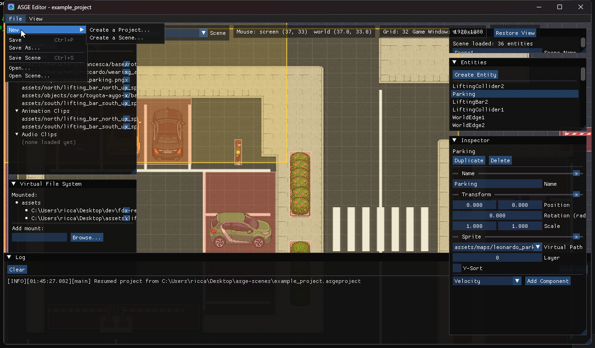

Projects & Scenes
A project is the durable unit; a scene is one of the project's levels. The editor tracks both, plus a lightweight session remembering what you had open.
An ASGE Project (.asgeproject) records VFS mounts, known asset
paths, view settings (grid spacing, target game window size) and the list of the project's
scene files. Each Scene (.asgescene) is a plain TOML file holding
one level's entities -- the same format SceneManager::SaveScene/LoadScene
use anywhere else in the engine. A small asge.session file remembers which project
and scene were active, auto-saved every 30 seconds and restored on the next launch. It lives in
your per-user data folder (%APPDATA%\ASGE\Editor on Windows), not next to the
executable, so it works even when the editor is installed somewhere read-only such as
C:\Program Files.

Create a Project.../Create a Scene... expanded"/>File menu
Everything project/scene-related lives under File:
- New > Create a Project... Name, folder, grid spacing and game window size; auto-creates and saves an "Empty Scene"
- New > Create a Scene... Adds a new scene to the current project (disabled without one)
- Save / Ctrl+P Saves only the project file (mounts, assets, view, scene list) -- never scene data, even a dirty scene
- Save As... Copies the project and every scene file to a new folder
- Save Scene / Ctrl+S Saves the active scene's entities
- Open... / Open Scene... Opens an existing
.asgeproject/ adds an existing.asgesceneto the current project
Every scene-affecting menu item is disabled while no project is open, and scene-specific ones stay disabled until a scene is active -- there's nowhere for a freshly-created entity or asset import to persist to otherwise.
Multi-scene switching

A small HUD panel next to the viewport's mouse-position
readout always shows Project: <name> and a Scene dropdown listing
every scene the project knows about. Picking a different one switches the active scene --
saving the outgoing one first if it's dirty (a filled dot next to the dropdown marks unsaved
changes) -- and resets selection, dirty state, and asset resolution for the incoming one.
Under the hood, SceneManager keeps exactly one scene's entities live at a time:
switching away suspends the outgoing scene into an in-memory snapshot rather than destroying it,
and switching back to an already-visited scene restores that snapshot instead of re-reading from
disk -- fast repeat switching with no risk of a stale scene's entities bleeding into rendering,
picking, or the entity list.
The Scene panel itself also lets you rename the active scene in place -- this moves its
actual .asgescene file on disk to match, it doesn't leave a copy behind under the old name.